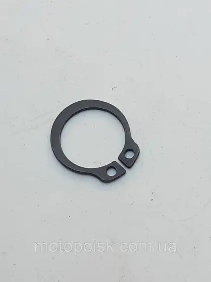

Скутери Yaben Актив
4-тактні, 80–150 cc. Оберіть вузол або введіть назву чи артикул.
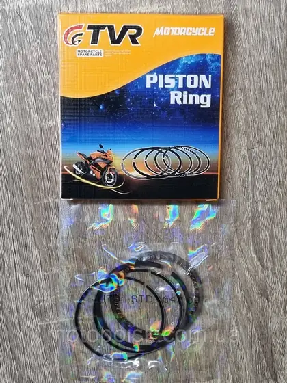
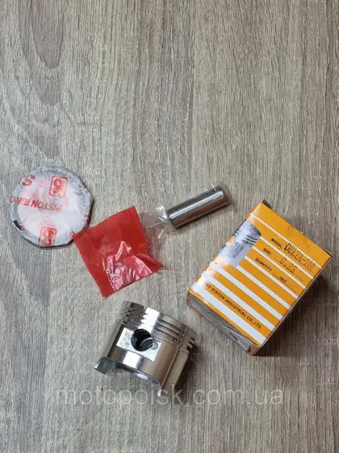
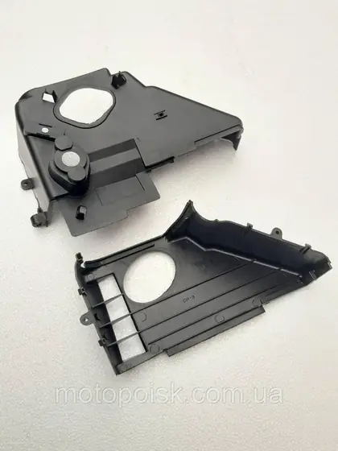
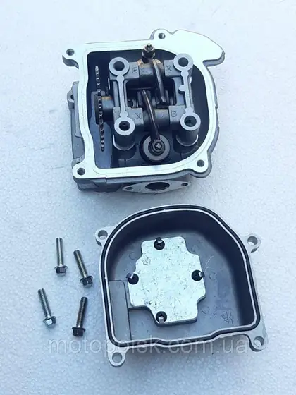
GY0913Головка циліндра в зборі, GY-80, Вайпер Шторм/
В наявності
Головка циліндра в зборі, GY-80, Вайпер Шторм/Viper Storm GY6-80. Китайські скутера
В наявності1 707 ₴/комплект
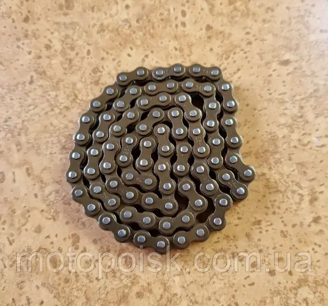
GY9895Ланцюг ГРМ/
В наявності
Ланцюг ГРМ/розподільника, 82 ланки, на китайські скутера 4т Вайпер Вінд/Шторм тощо.
В наявності112 ₴
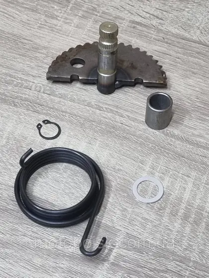
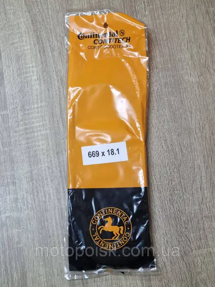
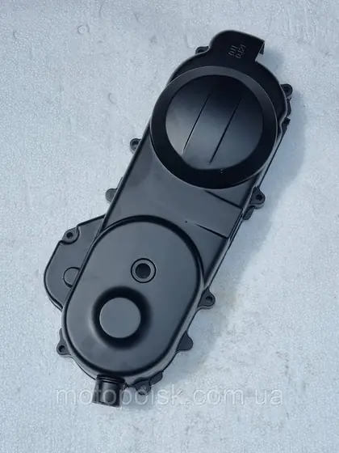
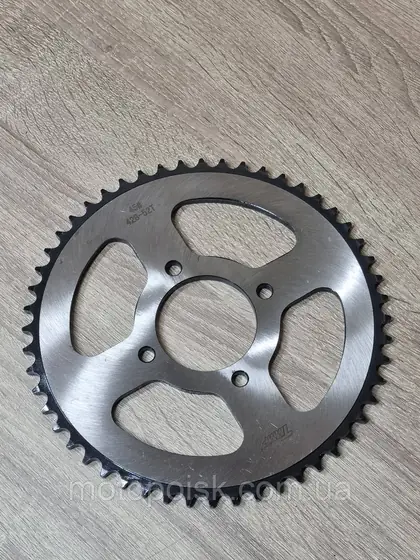
GY8806
Зірка задня 52 зуби 428-й крок на китайські мотоцикли. Посадкове місце 58 мм
Немає в наявності705 ₴Запитати
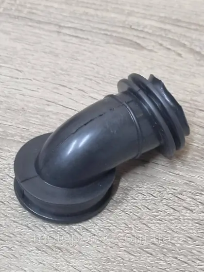
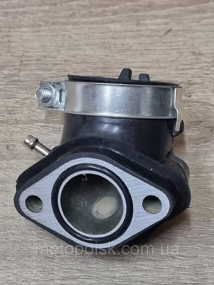
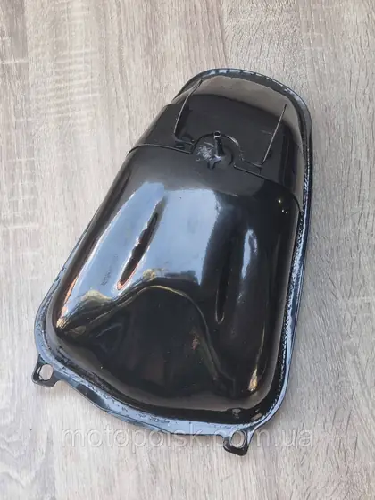
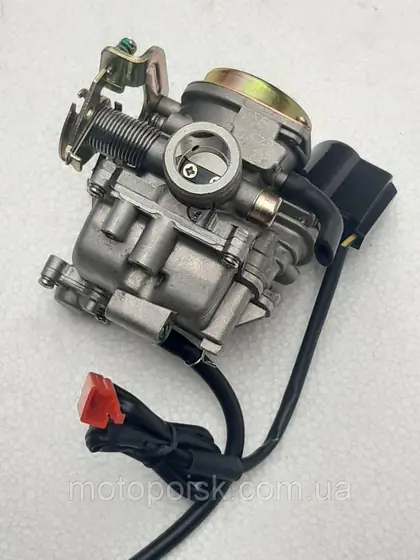
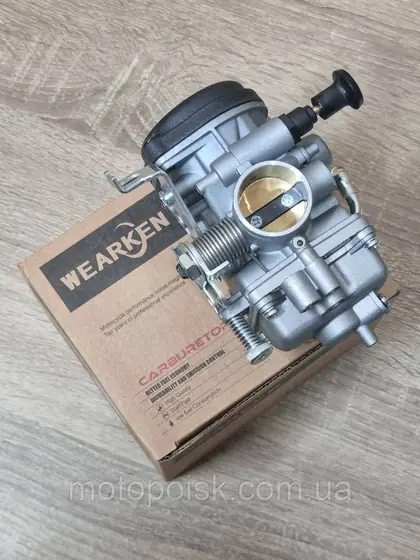
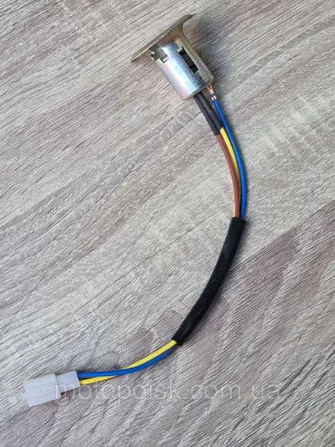
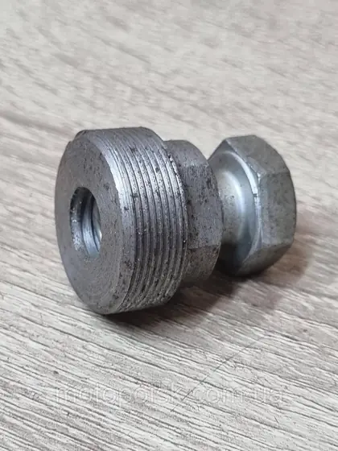
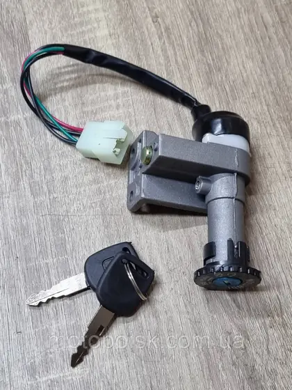
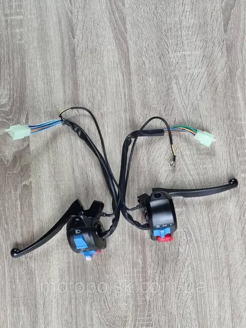
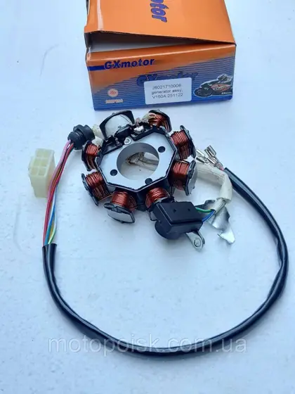
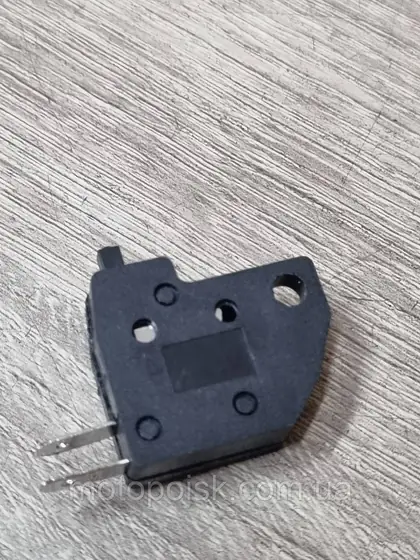
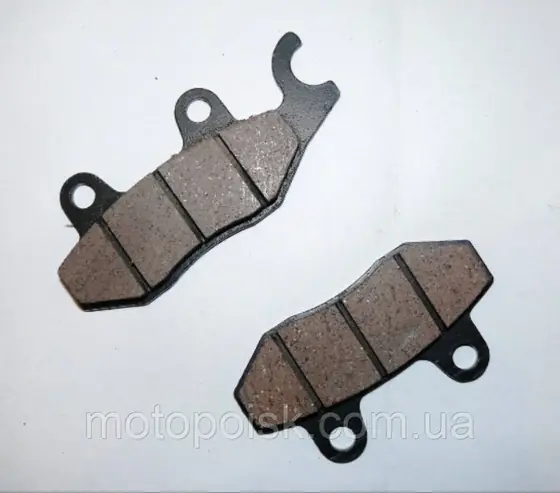
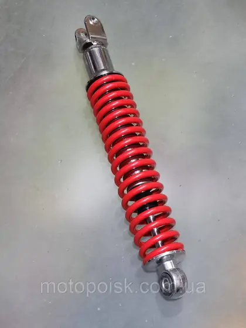
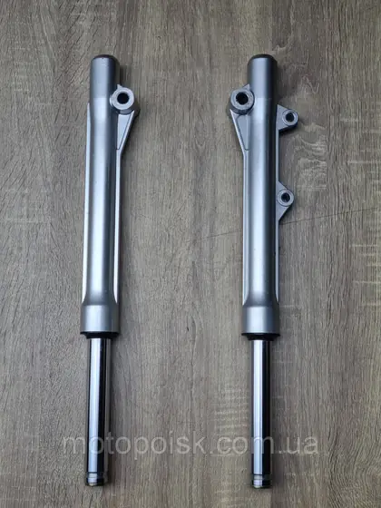
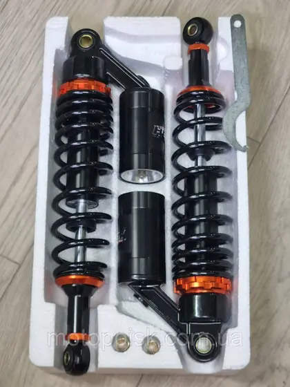
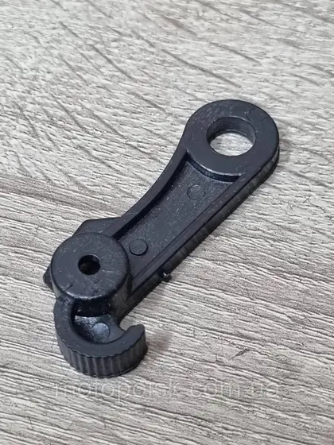
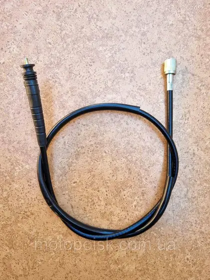
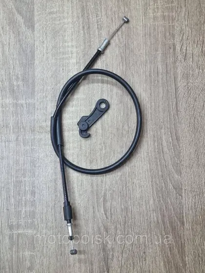
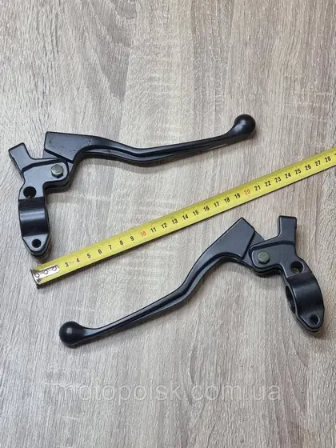
GY0285Ручки/
В наявності
Ручки/важіль витискні з хомутами на китайські скутера 110/125 с з універсальні пара
В наявності498 ₴/пара
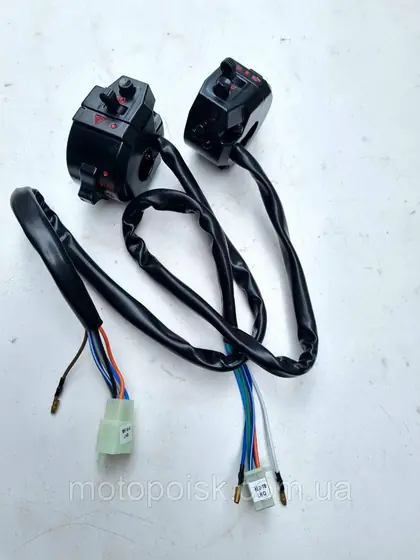
GY0502Тумблера/
Немає в наявності
Тумблера/перемикачі світла та поворотів на скутера GY-50/60/80/110/125 диск/диск
Немає в наявності531 ₴Запитати
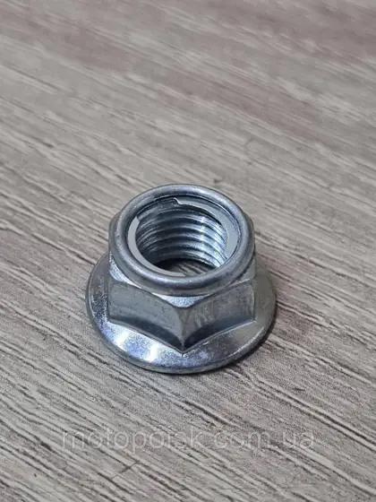
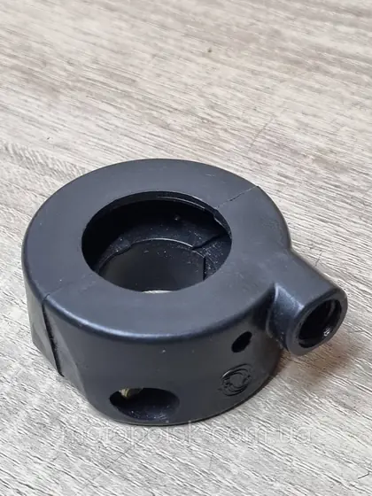
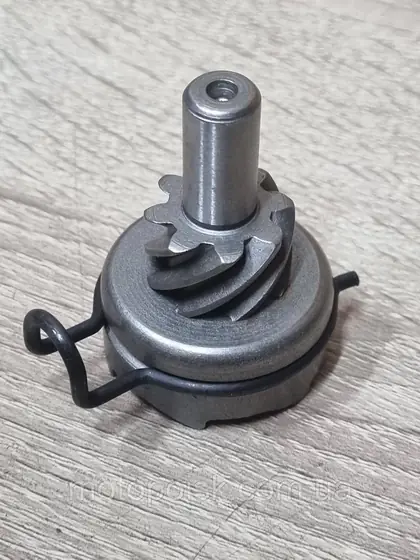
GY9398Храповик на китайські 4т скутера. Вайпер/
В наявності
Храповик на китайські 4т скутера. Вайпер/Навігатор/Дефіант 50/60/80 куб та інші
В наявності202 ₴
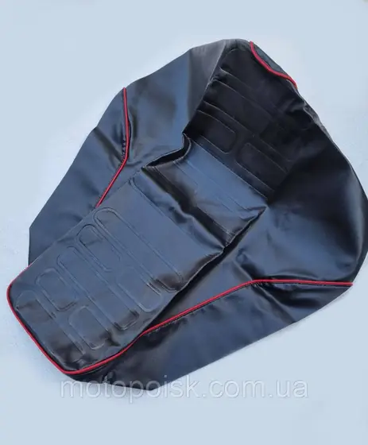
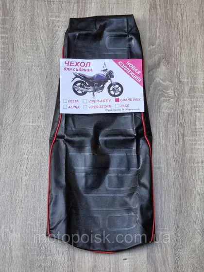
GY9404Чохол сидіння на китайський скутер Viper Grand Prix/
Немає в наявності
Чохол сидіння на китайський скутер Viper Grand Prix/Вайпер Гранд Прикс
Немає в наявності325 ₴Запитати
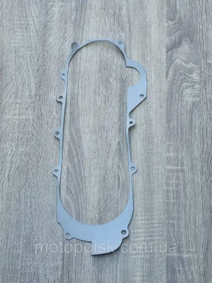
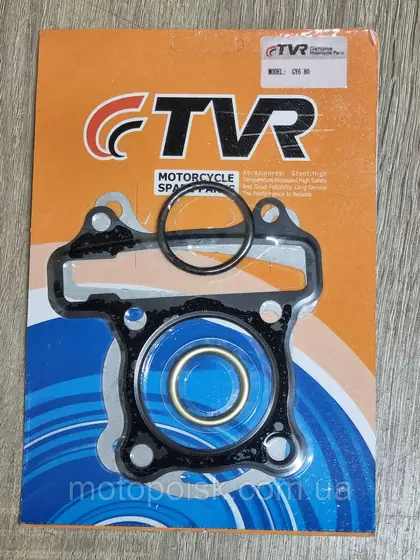
GY8524
Прокладки головки циліндра на китайські чотиритактні скутера та мопеди Д47 мм
В наявності83 ₴/комплект
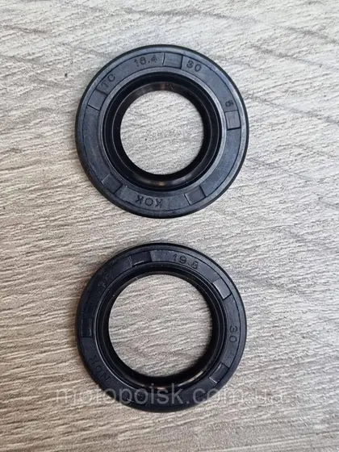
GY9240Сальники колінвала на китайські чотиритактні скутера GY50/
В наявності
Сальники колінвала на китайські чотиритактні скутера GY50/60/80/100/110. Пара. Тайвань
В наявності124 ₴/комплект
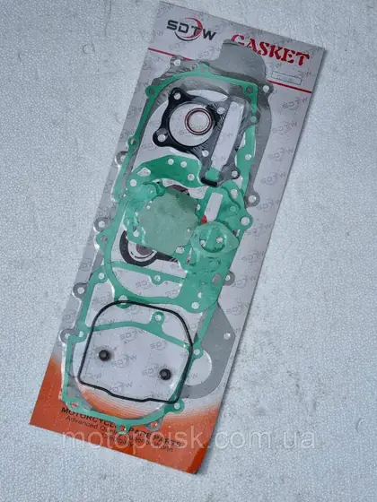
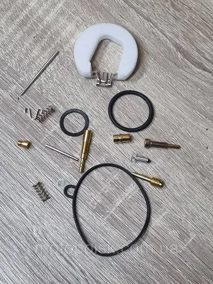
Нічого не знайшли у прев'ю. Зніміть фільтр або зателефонуйте: +380 (68) 316-07-03.